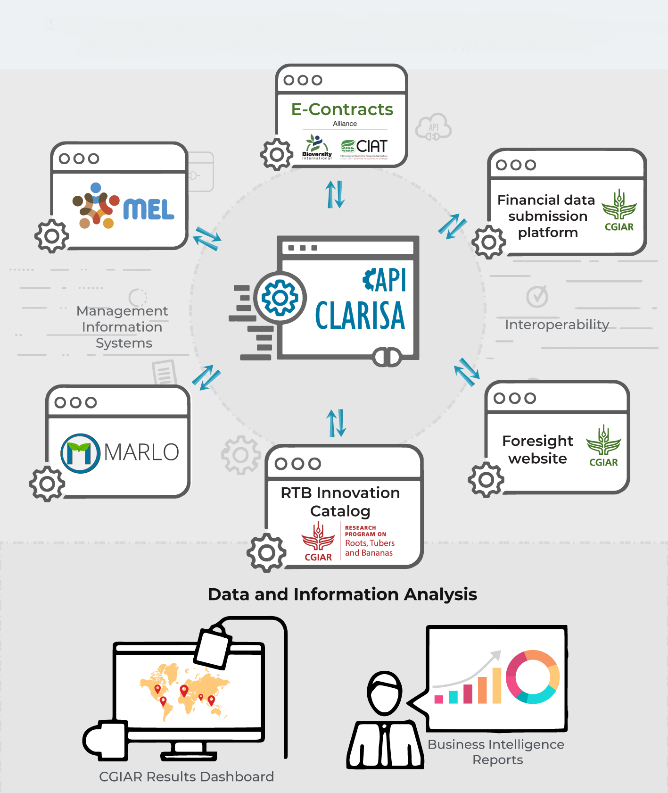

<div class="inner-wrapper">
  <div class="container">
    <div class="classic-tab-panel">
      <div class="tab-content">
        <div class="tab-pane active" id="mission">
          <div class="row">
            <div class="col-sm-12 col-md-4">
              <div class="img-border" style="border-radius: 15px">
                <div class="tes-img">
                  
                </div>
              </div>
            </div>
            <div class="col-sm-12 col-md-8">
              <h2>Information <span style="color: #ffc84f"> About us</span></h2>
              <p>
                CLARISA is the CGIAR Level Agricultural Results Interoperable
                System Architecture, a web service that helps collect and
                transform raw data of CGIAR research and activities into
                standardized and aggregated information. The service supports
                the work within One CGIAR and reveals its impacts on development
                – reducing poverty, improving food and nutrition security for
                health, and improving natural resources and ecosystem services.
              </p>

              <p>
                In programming terms, CLARISA is a REST-API, a web service that
                enables computer systems to work together over the Internet.
                CLARISA is pivotal in supporting interoperability by enabling
                Management Information Systems and Centre specific systems to
                communicate with each other in the language needed for the CGIAR
                system-level reporting. This allows CGIAR to show results and
                impacts to external partners in a clear, accountable, and
                transparent way.
                <br />
                <a
                  href="https://hdl.handle.net/10568/117371"
                  target="_blank"
                  rel="noopener noreferrer"
                >
                  <button type="button" class="btn btn-link">
                    Discover more about CLARISA in this report.
                  </button>
                </a>
              </p>
            </div>
          </div>
        </div>
      </div>
    </div>
  </div>
</div>
